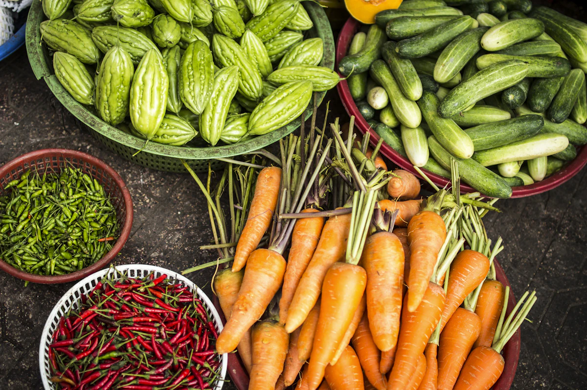

06 / Market insight
Stay ahead of pricing, demand, and supply signals.
From seasonal demand shifts to transport coordination, market awareness helps farms make better decisions at every stage.

This week's crop prices
Per quintalWeekly pricing pulse
Know when to hold, sell, or adjust harvest plans.
Demand forecasting
Track shifting consumer needs across regions.
Supply chain clarity
Coordinate better from harvest to retailer in real time.
Market intelligence
We help farms align production with real-time demand, transportation needs, and seasonal shifts.
Commercial advantage
Greater visibility supports better pricing decisions, stronger margins, and less uncertainty.
Subsections
Additional market insights for stronger planning
Seasonal signals
Plan ahead with a better sense of arrival windows, demand shifts, and price movement.
Delivery coordination
Improve logistics and lower friction from harvest to final sale.
Commercial confidence
Responsive insights create stronger negotiation posture and healthier margins.
Market access
Help farmers understand demand before harvest.
Market planning reduces waste and improves price confidence. This page can include buyer demand, seasonal price trends, storage tips, grading standards, and transport guidance.
Market support points
- Daily price awareness for important crops.
- Buyer-ready packaging and quality grading.
- Harvest scheduling based on demand windows.
- Direct selling options for local communities.